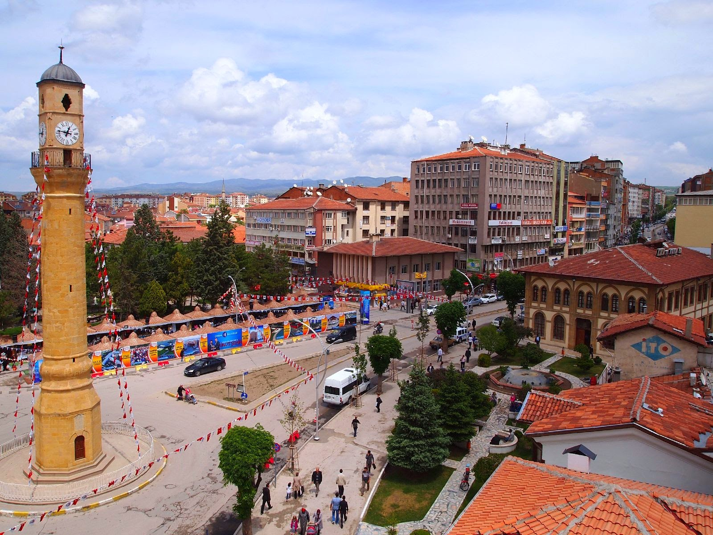
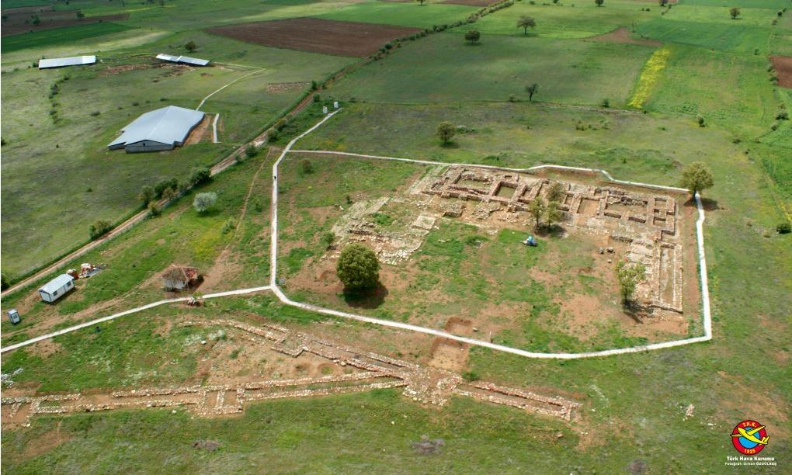
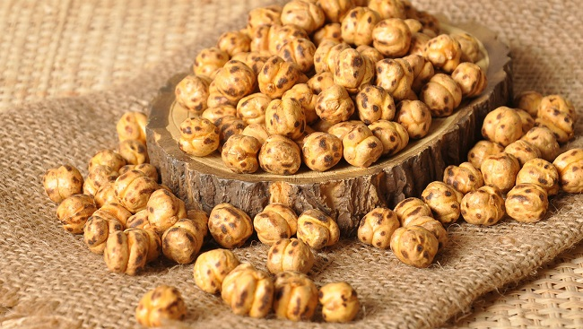

ÇORUM
Çorum İsminin Ortaya Çıkışı
Çorum isminin ortaya çıkışı Çorum, binlerce yıldır çeşitli uygarlıkların yan yana ve üst üste oluşturduğu, yerli Anadolu kültür geleneğini devam ettiren illerin başında gelmekle birlikte merkez ilçenin tümüyle şehir olarak kurulması 11.
yüzyıla kadar inmektedir. Müslüman Türklerce kurulmuş Anadolu şehirlerinden birisidir. Çorum isminin günümüzdeki haline dönüşümü konusunda farklı varsayımlar üzerinde durulmaktadır; [kaynak belirtilmeli] MÖ 3. yüzyılda Avrupa'da Anadolu'ya
geçerek şimdiki Çorum, Sivas, Yozgat arasına yerleşen Galat topluluklarının adı olan Trokmu sözcüğünden gelmiştir. Trokmu oymağı, Hitit İmparatorluğu'ndan kalma başkent olan Hattuşaş (Boğazköy) yöresine yerleşmiştir. Trokmu sözcüğü
zamanla Torokmu'ya daha sonra da Çorumlu'ya dönüşmüştür. MÖ 90-80 yıllarında Pontus Krallığı'na bağlı olarak Kapadokya valiliği yapan Gordios'a dayanmaktadır. Gordios'un yönetimi sırasında Gordiana denilen bölge Gordios'un yönetiminden
sonra da uzun süre aynı adı taşıdı. Gordiana, önce Gordum'a, zamanla da Çorum'a dönüşmüştür. Eski Yunan kaynaklarında Çorum'un adı Niconia (Nikonya) olarak geçmektedir. Bizans döneminde de Evkaite diye geçmektedir. 1072 Malazgirt Savaşı
ile Çorumlu olan vilayetin ismi 16. yüzyılın sonralarına doğru "lu" ekinin kaldırılması ile Çorum olarak kalmıştır.

HİTİTLER
İl toprakları, kıyı kesimi dışında ortası çukur, çevresi dağlarla kuşatılmış ovalardan oluşur. Kuzeyde Akçakoca Dağları, doğuda Bolu Dağları, güneydoğu ve güneyde Abant Dağları’nın batı uzantıları yer alır. Orta kesimde tarımsal üretim
açısından büyük önem taşıyan Düzce Ovası yer alır. İlin başlıca akarsuyu Melen Çayı’dır. Akçakoca Dağları’ndan doğan bu akarsuyun Melen Gölü de denilen Efteni Gölü’ne kadarki bölümü Küçük Melen Çayı, bu gölle denize döküldüğü Melenağzı
arasındaki bölümüne de Büyük Melen Çayı adı verilir. Tarım alanlarının sulanması ve bu alanların taşkından korunması amacıyla Küçük Melen Çayı üzerinde yapılan Hasanlar Barajı’nın tamamlanma tarihi 1972’dir. Hasanlar Baraj Gölü ildeki
tek yapay göldür.
Şapinuva
Çorum’un Ortaköy, ilçesinde yer alan Şapinuva, Hititlerin önemli idari merkezlerinden birisidir. Hititler zamanında, hem siyasi hem de coğrafi konumu nedeniyle stratejik bir noktada yer alan şehir, önemli bir askeri ve dini merkezdir.
Şapinuva ile ilgili olarak Tokat Maşat Höyük kazılarında ele geçen büyük krala ait bir mektupta ‘Bu tablet size ulaşınca, 1701 askeri İshupittadan acele olarak sevmediniz ve onları iki gün içerisinde Şapinuva şehrine, Majeste’nin huzuruna
getiriniz.’ ifadesine göre Hitit kentinin önemli idari bir merkezi olduğu anlaşılmıştır. Buradaki yazışmaların büyük bir kısmını oluşturan büyük kral ve kraliçeye gönderilen mektuplar, Şapinuva’da bir kraliyet çiftinin varlığını gösterir.
Kentte Büyük kral III. Tuthaliya’nın yanında yer alan kraliçe Taduhepa’dır. Taduhepa III. Tuthaliya’nın ölümünden sonra Kral I. Şupiluliuma ile birlikte ülkeyi yöneten kraliçedir. Şapinuva şehri ayni zamanda ordu komutanlığının ve
askerin sürekli olarak hazır bulunduğu bir yerdir. Şapinuva, kendi idari bölgesinde yer alan şehirlerle birlikte oldukça geniş bir alana yayılmakta ve iki Fırtına Tanrısı adına ayrı ayrı yapılmış olan iki tapınağı, kraliçe sarayı,
ordu komutanlığı ve belediye teşkilatı gibi önemli kurumlarıyla oldukça teşkilatlı bir şehir görünümündedir. Kaynak: Çorum İl Kültür ve Turizm Müdürlüğü Arşivi-Coğrafyası Tarihi Kültürü ve Edebiyatıyla Çorum

ÇORUM LEBLEBİSİ
Çorum’un meşhur sarı leblebisi, yerli ve yabancı turistlerin yoğun olarak talep ettikleri ürünlerin başında gelir. Son yıllarda giderek artan çeşit zenginliği ile başta Almanya olmak üzere Avrupa’nın diğer ülkelerine, Avustralya’ya, Amerika’ya, Kanada’ya
ve Asya ülkelerine ihraç edilmektedir. Çorum leblebisinin geçmişi 3 asır öncesine kadar gitmektedir. Ahmedi Sever isminde muhterem bir zatın Çorum’da yetişen nohut cinslerinden leblebiyi imal ettiği söylenmektedir. Yaklaşık 3 asırdır
ilimizde üretimi yapılan leblebinin adı adeta Çorum ismi ile özdeşleşmiştir. Çorum denince leblebi, leblebi denince ise akla hemen Çorum gelir. Kuru nohudun leblebiye dönüşmesi günler süren, zahmetli birçok işlemin sonunda gerçekleşmektedir.
